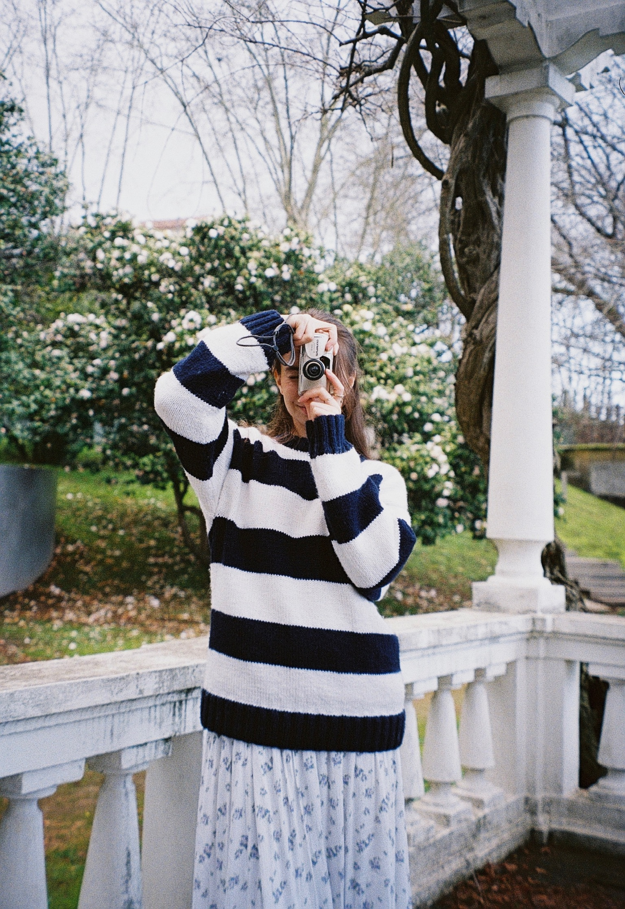
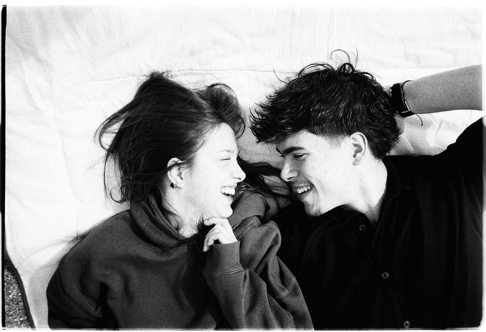
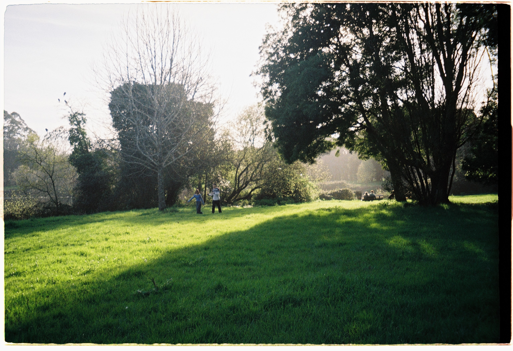
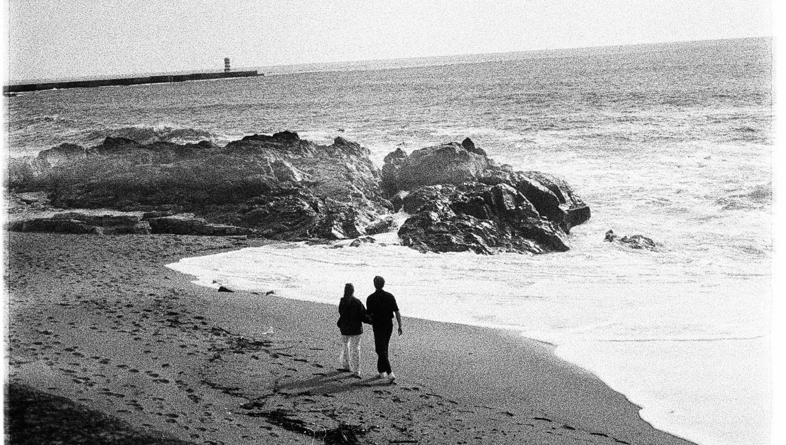

WHO IS MIA?
Hi, I'm Mia. I'm 20 years old, and for as long as I can remember, I've always been fascinated by cameras.
I loved to look at them, try to figure out how they worked, and imagine everything they could hold inside a photograph. My parents say that when I was very little, I was always going after the cameras at home and that I even managed to break one of them.
In my defense, I was only 3 years old.

Photography arose from this curiosity, but it quickly became something much bigger: a way to document what I like to observe the most love. and these are the moments that matter.

I like to capture genuine connections, whether they are between two people, a family, or even the relationship each person has with themselves. I believe that we all see the world differently and that art is born precisely from this unique way of feeling and interpreting life.

This is my way of telling it: through images that preserve real emotions, memories, and stories.
